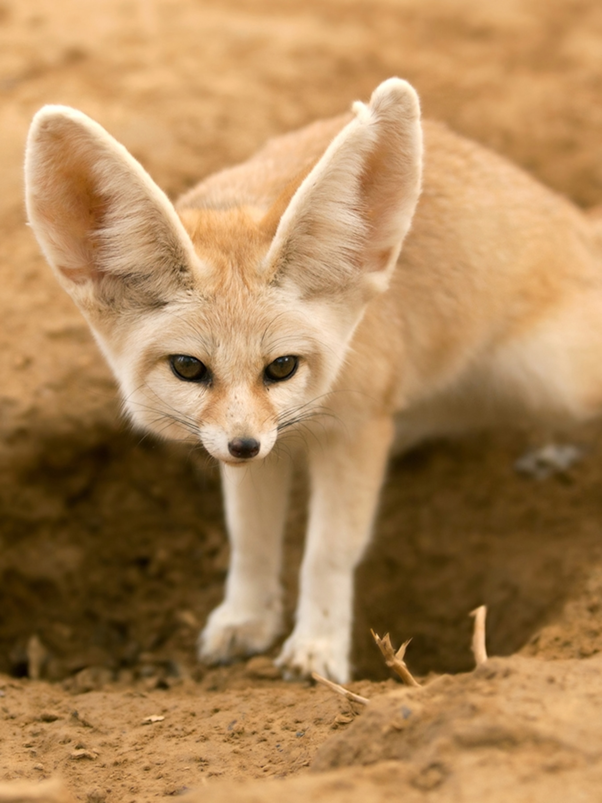

The fennec fox is a small crepuscular fox native to the deserts of North Africa, they can be found in territories such as:
In the wild, fennec foxes eat insects —particularly grasshoppers and locusts— as well
as small rodents, lizards, birds and their eggs.
They will also consume roots, fruits and leaves,
which help them to hydrate.
Here are some characteristics of the specie:
Image of a fennec fox:
Sources:
Wikipedia National Geographic National Zoo